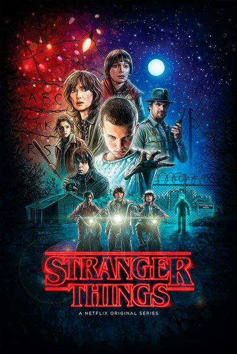
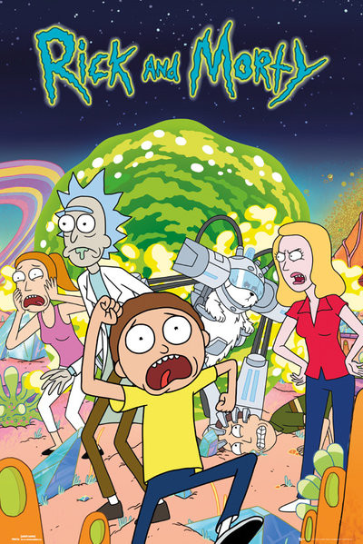

Dark es una serie de televisión web alemana de suspense y ciencia ficción creada por Baran bo Odar y Jantje Friese. Situada en la ficticia ciudad de Winden (Alemania), Dark sigue las secuelas de la desaparición de un niño que expone los secretos y las conexiones ocultas entre cuatro familias mientras desentrañan lentamente una siniestra conspiración de viaje en el tiempo que abarca tres generaciones. A lo largo de la serie, Dark explora las implicaciones existenciales del tiempo y sus efectos sobre la naturaleza humana.

Stranger Things es una serie de televisión web estadounidense de suspenso y ciencia ficción coproducida y distribuida por Netflix. Escrita y dirigida por los hermanos Matt y Ross Duffer y producida ejecutivamente por Shawn Levy, fue estrenada en la plataforma Netflix el 15 de julio de 2016, con críticas positivas por parte de la prensa especializada, quienes elogiaron la interpretación, caracterización, ritmo, atmósfera y el claro homenaje al Hollywood de la década de 1980

Rick y Morty es una serie de televisión estadounidense de animación para adultos creada por Justin Roiland y Dan Harmon en 2013 para Adult Swim. La serie sigue las desventuras de un científico, Rick, y su fácilmente influenciable nieto, Morty, quienes pasan el tiempo entre la vida doméstica y los viajes espaciales, temporales e intergalácticos. Roiland es el encargado de darle voz a Rick y a Morty, la serie también incluye las voces de Chris Parnell, Spencer Grammer y Sarah Chalke.